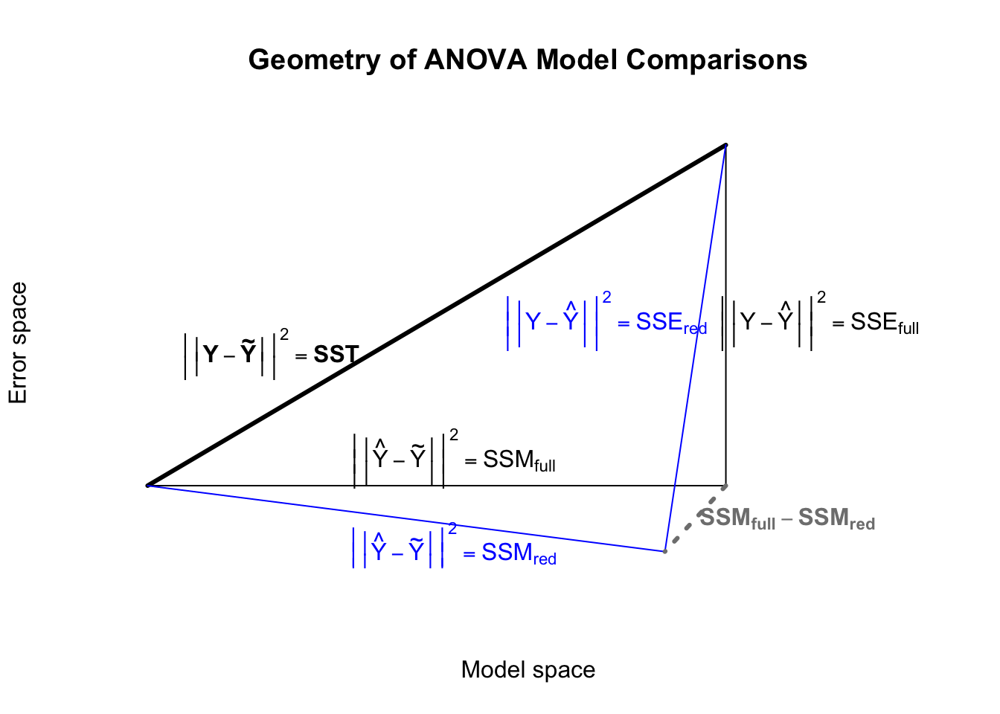
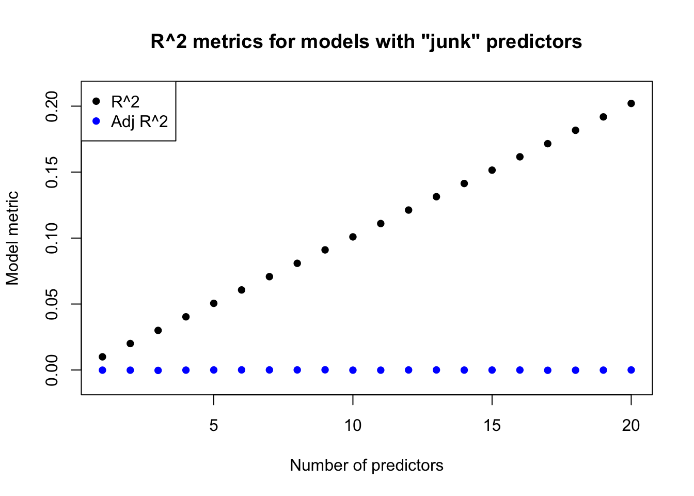
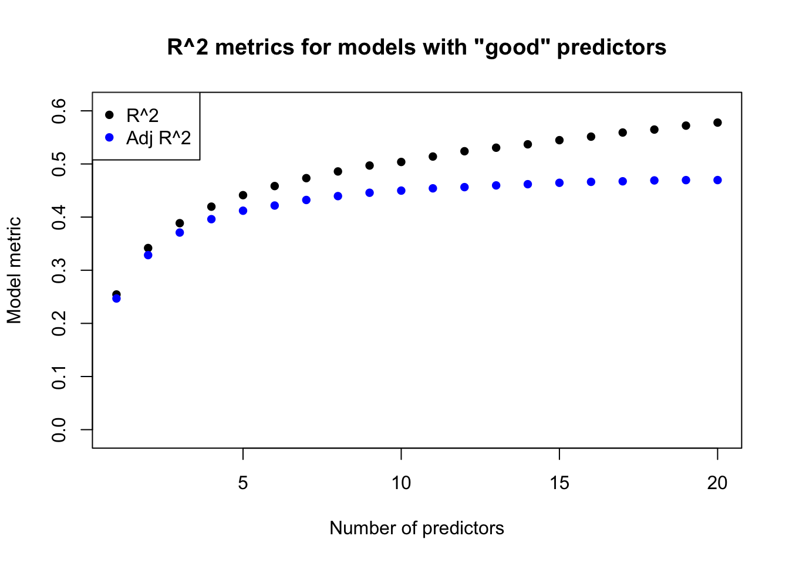

We’ve now seen how to assess individual predictors and also how to determine if none of our predictors offer significant explanatory power. However, we still lack tools for comparing two fully-featured models and determining whether one is meaningfully better or worse than the other. This section provides several methods and metrics which will help us compare models, even models with no common predictors.
First, let’s establish the reason why we even care. After all, among any two models for the same response vector \(\boldsymbol{y}\), one has the higher R2 and the smaller residual sum-of-squares.1 We could simply pick that model, every time. Why don’t we?
Statisticians place a great deal of belief in the principle of parsimony: among competing explanations, we often choose the larger and more complicated model only when it explains significantly more of \(\boldsymbol{y}\). If the two models provide similar explanatory power, we generally choose the smaller and simpler model, even if it performs a little worse.
ANOVA tests to choose between nested models
When one model contains all the terms of a smaller model, and other terms besides, then we say that the two are nested models and that the smaller model is nested within the larger model. Because the larger model starts from exactly the same terms as the smaller model and simply adds more predictors, it will always perform at least as well as the smaller model. But will it perform significantly better? Together, the IID Normal assumption for our errors and the least squares framework give us a convenient framework for evaluating which model is superior.
Consider two nested models: the full model which contains all terms, and the reduced model which contains some fewer number of terms. The model space of the reduced model is therefore different from the model space of the full model. In particular, the residuals of the reduced model will be orthogonal to its own model space, but not orthogonal to the model space of the full model. Consequently, SSEred, which is related to the length of the vector of the residuals, will be longer than SSEfull. And through the relation that SST = SSM + SSE, we can see that SSMfull will be longer than SSMred:2
Code
vec.length <-function(v) sqrt(v%*%v)X <-c(1,2,3,4,5)Y <-c(6,8,6,2,3)Yhat <-lm(Y~X)$fitted.valuese <-lm(Y~X)$residualsplot(x=NA,y=NA,xlim=c(0,5),ylim=c(-0.6,3.2),xlab='Model space',ylab='Error space',axes=FALSE,main='Geometry of ANOVA Model Comparisons')lines(x=c(vec.length(Yhat-mean(Y)),0),y=c(vec.length(e),0),lwd=3)lines(x=c(0,vec.length(Yhat-mean(Y)),vec.length(Yhat-mean(Y))),y=c(0,0,vec.length(e)))lines(x=c(0,vec.length(Yhat-mean(Y))-0.4,vec.length(Yhat-mean(Y))),y=c(0,0-0.6,vec.length(e)),col='#0000ff')lines(x=c(vec.length(Yhat-mean(Y)),vec.length(Yhat-mean(Y))-0.4),y=c(0,-0.6),col='grey50',lwd=3,lty=3)text(x=0.8,y=1.2,labels=expression(bold(bgroup('|',bgroup('|',Y-tilde(Y),'|'),'|')^2==SST)))text(x=2,y=0.25,labels=expression(bgroup('|',bgroup('|',hat(Y)-tilde(Y),'|'),'|')^2==SSM[full]))text(x=2,y=-0.6,labels=expression(bgroup('|',bgroup('|',hat(Y)-tilde(Y),'|'),'|')^2==SSM[red]),col='#0000ff')text(x=4.4,y=1.5,labels=expression(bgroup('|',bgroup('|',Y-hat(Y),'|'),'|')^2==SSE[full]))text(x=3,y=1.5,labels=expression(bgroup('|',bgroup('|',Y-hat(Y),'|'),'|')^2==SSE[red]),col='#0000ff')text(x=4.2,y=-0.3,labels=expression(bold(SSM[full]-SSM[red])),col='grey50')

The least-squares basis for an ANOVA comparison test
In the diagram above, consider what would happen if the additional model space dimensions afforded by the full model were, essentially, junk — spurious correlation — random noise. Under this hypothesis, the blue reduced model is the “true” model, and the full model is a distraction. We can show that the distance the grey dashed line moves us away from the “truth” would be equal to the sum of squares of uncorrelated normal errors, equal in number to the extra parameters of the full model. This suggests that the squared-distance of the grey line is chi-square distributed under the null hypothesis, which in turn produces an F-test of the difference in model strengths:
Note
Let \(\boldsymbol{y}\) be a sample of \(n\) observations of some response variable \(Y\), and let \(\mathrm{M}_{red}\) be an OLS regression of \(\boldsymbol{y}\) using \(k_{red}\) predictors. Suppose that \(\mathrm{M}_{red}\) is nested inside \(\mathrm{M}_{full}\), a larger OLS regression model containing \(k_full\) predictors, and let \(\beta_{k_{red}+1}, \beta_{k_{red}+2}, \ldots, \beta_{k_{full}}\) be the parameters of \(\mathrm{M}_{full}\) not found in \(\mathrm{M}_{red}\). Then,
is an F-distributed test statistic for the null hypothesis that \(\beta_{k_{red}+1}, \beta_{k_{red}+2}, \ldots, \beta_{k_{full}}\) all equal zero, i.e. that the full model’s extra parameters are irrelevant to the regression.
Let’s implement this test using model information from a statistical software package. Consider the fuel efficiency dataset discussed earlier (in Predictor importance). Imagine a full model which contains a categorical predictor for cylinder count (4, 6, or 8 — requiring two dummy variables) and numeric predictors for horsepower, weight, and displacement. We can compare this to a reduced model which only contains the categorical predictor for cylinder count. Once we fit both models, we can easily extract their respective SSMs and SSEs:
Full model
Reduced model
Predictor names
Horsepower, weight, displacement, cylinder
Cylinder
k (non-intercept betas)
5
2
n (sample size)
32
32
SSM
965.92
824.78
SSE
160.13
301.26
And with this information we can complete the hypothesis test:
With a table or software assistance we find that the p-value of this F score is <0.001, which provides plenty of evidence to reject the null. We might interpret the test as follows: horsepower, weight, and displacement improve our model fit by a large amount; in contrast, three “junk predictors”, containing nothing but spurious correlations, would only improve our model fit by the same amount in fewer than 0.1% of random samples. Therefore we will keep the predictors, and choose the full model.
This test is very straightforward and can be used with any nested least-squares models, including those with categorical predictors and interaction terms. The disadvantage of this test is that it only works with nested models and a firm belief that the errors are truly IID normal. Otherwise — and as with any distribution-based hypothesis test — the p-values of the test will be unreliable. When the p-values are very large (say, \(p \gt 0.5\)) or very small (say, \(p \lt 10^{-6}\)), some mildly non-IID behavior should not stop you from relying on these tests.
Adjusted R2, AIC, and choosing between non-nested models
While the ANOVA test above is both conceptually straightforward and easy to calculate, we cannot use it to compare non-nested models. For example, we might want to test whether a predictor is more effective when log-transformed or not: \(Y \sim X\) and \(Y \sim \log X\) are not nested models, since log is a nonlinear transformation of the original variable. As another example, we might want to compare an established academic model, \(Y \sim X_1 + X_2 + X_3\), against a new theoretical model with no terms in common, \(Y \sim X_4 + X_5\). In this section we’ll discuss two new tools which help us with such comparisons.
Adjusted R2
Our first tool is called “adjusted” R2 and, as the name implies, it subtly alters the original R2 calculation in order to make comparisons between models of different sizes:
Note
Suppose an OLS regression model trained on a sample of \(n\) observations and using \(k\) predictor terms (not including the intercept). Then the adjusted R2 of the model is given by the following formula:
For comparison, recall that \(R^2 = 1 - \mathrm{SSE}⁄\mathrm{SST}\). So this adjusted R2 calculation converges toward the raw R2 when \(k \ll n\), and becomes very small — or even negative — when \(k\) approaches \(n\) in size.
Adjusted R2 therefore provides a metric which balances explanatory power against the number of terms in the model. We have seen before that adding predictors can never decrease raw R2, and so we could create arbitrarily high R2 values simply by adding enough “junk” predictors to the model. Adjusted R2 would penalize this approach:
Code
#penalty rate of adjusted r^2 (will take time to run)library(MASS)set.seed(8192)adjr2.sims <-array(rnorm(21*100*10000),dim=c(100,21,10000))adjr2.r2 <-rowMeans(apply(adjr2.sims,3,function(z)sapply(2:21,function(y) summary(lm(z[,1]~z[,2:y]))$r.squared)))adjr2.adjr2 <-rowMeans(apply(adjr2.sims,3,function(z)sapply(2:21,function(y) summary(lm(z[,1]~z[,2:y]))$adj.r.squared)))adjr2.Sigma <-matrix(0.5,nrow=21,ncol=21)diag(adjr2.Sigma) <-1adjr2b.r2 <-rowMeans(replicate(n=10000,sapply(2:21,function(z){ tmp <-mvrnorm(100,rep(0,21),adjr2.Sigma)summary(lm(tmp[,1]~tmp[,2:z]))$r.squared})))adjr2b.adjr2 <-rowMeans(replicate(n=10000,sapply(2:21,function(z){ tmp <-mvrnorm(100,rep(0,21),adjr2.Sigma)summary(lm(tmp[,1]~tmp[,2:z]))$adj.r.squared})))plot(1:20,adjr2.r2,main='R^2 metrics for models with "junk" predictors',xlab='Number of predictors',ylab='Model metric',pch=16,ylim=c(-0.01,0.21))points(1:20,adjr2.adjr2,pch=16,col='#0000ff')legend(x='topleft',pch=16,col=c('black','#0000ff'),legend=c('R^2','Adj R^2'))

Adjusted R^2 penalties in different modeling contexts
Code
plot(1:20,adjr2b.r2,main='R^2 metrics for models with "good" predictors',xlab='Number of predictors',ylab='Model metric',pch=16,ylim=c(-0.01,0.61))points(1:20,adjr2b.adjr2,pch=16,col='#0000ff')legend(x='topleft',pch=16,col=c('black','#0000ff'),legend=c('R^2','Adj R^2'))

Adjusted R^2 penalties in different modeling contexts
The figure above shows how adjusted R2 can differ significantly from raw R2. The left plot was based on simulated data where every predictor was truly uncorrelated with the response. Raw R2 still climbs almost linearly due to spurious correlations, but adjusted R2 correctly hovers near 0% no matter how many predictors we add to the model. The right plot uses predictors which were designed to have “real” explanatory power. The R2 values are much higher here, and continue to climb as we add more predictors. The adjusted R2 scores also go up as we add more and more “real” predictors, but these gains taper sharply as the model grows.
In short, adjusted R2 provides an “apples-to-apples” comparison of the explanatory power of any two models for the same response vector y, even if the models have a different number of terms. We can use adjusted R2 to compare nested models, or non-nested models. When comparing two models of the same size, we can use either adjusted R2 or raw R2, since the parameter penalty will be the same for both models.
Adjusted R2 does bring two small disadvantages. The first is that it lacks the easy interpretability of R2, which literally measures the proportion of the variance of \(\boldsymbol{y}\) described by our model predictions \(\hat{\boldsymbol{y}}\). Adjusted R2 measures something similar, but because of its parameter penalty it remains slightly harder to communicate to a non-technical audience. The second disadvantage is that adjusted R2, like raw R2, is a least squares technique that we cannot use when comparing to models built outside the least squares framework, such as the generalized linear models described in later sections, or machine learning methods.
AIC
The second tool we have for comparing non-nested models is called the Akaike Information Criterion and known much more commonly as AIC:
Note
Suppose a parametric model containing \(p\) parameters (including the intercept, if present, and any other estimated parameter, such as the error variance \(\sigma\)). Let \(\ell_{ML}\) be the log-likelihood of the model when using the maximum likelihood estimators for the parameters. Then the Akaike Information Criterion (AIC) of the model is given by the following formula:
\[\mathrm{AIC} = 2p - 2\ell_{LM}\]
Because we try to maximize likelihood, which enters AIC with a negative sign, lower values of AIC describe better models. By “lower”, I mean that large negative values such as -100 would be even better than small negative values such as -5.
Since the number of parameters enters the model with a positive sign, larger models will create a penalty as we try to find the lowest AIC. Just like adjusted R2, we have found a way to balance a pure measure of model fit (log-likelihood) against a penalty for model size (number of parameters).3
AIC addresses one of the problems faced by adjusted R2: we can use AIC to compare any two parametric models, even models outside the least squares framework. However, AIC brings its own disadvantage: it lacks any sense of absolute scale. Recall that R2 is always between 0 and 1, and adjusted R2 is almost always between 0 and 1 as well. Even when we are not comparing models, we know that a score of 0 is “bad” and a score near 1 is “good.” But AIC provides no sense of scale. The exact same model applied to a new sample might have wildly different AICs, and even simply changing the sample size can drastically change AIC. Put another way, a model’s AIC has almost no meaning by itself, and only gains meaning when compared to another model’s AIC.
These two tools, adjusted R2 and AIC, share one trait: they are only metrics, and not hypothesis tests. When you compare two models using either adjusted R2 or AIC, you will always receive an answer of which model is “better”. This answer will even account for differences in model size. But neither adjusted R2 nor AIC can tell us whether the better model is significantly better. For that we would need a hypothesis test, such as the ANOVA comparison test above.
Earlier, in #sec-interactions, we examined a dataset of iris flower measurements, and considered four models of increasing complexity. Let’s examine those again, with these new tools:
In this case, all of the evidence points in the same direction. The model with an interaction term not only explains the response variable best, but it also performs the best even when taking into account its larger model size.
Technically they could tie, but in practice this only happens when they are essentially the same model.↩︎
And by equal amounts: SSMfull – SSMred = SSEred – SSEfull.↩︎
Further research has suggested alternative penalties. You may come across BIC (Bayesian Information Criterion), which is also called SBC, or see AICc, which is a “corrected” AIC used for small samples. These differences or improvements are usually marginal, and most data scientists continue to use AIC or at least accept AIC-based conclusions.↩︎